Bonjour et bienvenue sur mon porfolio, je m'appelle Toni Vu. Je suis sur le point de débuter ma 3ème année d'apprentissage à l'ERACOM. J'y ai pris le temps d'apprendre avec soin le métier d'Interactive Media Designer qui pour moi ouvre un grand nombre de possibilité dans le monde de la communication visuel.
Toni Thien Duc Vu
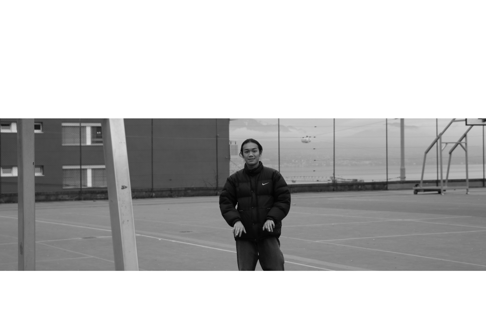
AFFICHES - ANIMATIONS


Dans le cadre de mon apprentissage à l'ERACOM, j'ai pu réaliser des stories Instagram qui auront pour but d'avertir la population lausannoise des prochaines dates de concert qui auront lieu au Docks. C'était une collaboration riche en liberté et en création. Je suis ravi de pouvoir vous les partager.
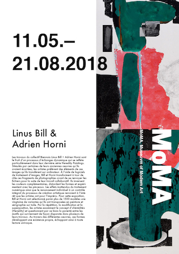
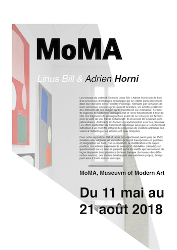
Voici deux affiches fictive réalisé durant mes cours de Graphisme. Le graphisme est l'une de mes branches favorites parmi les nombreuses que l'on nous enseigne.
MURAPICLAF - PHOTO
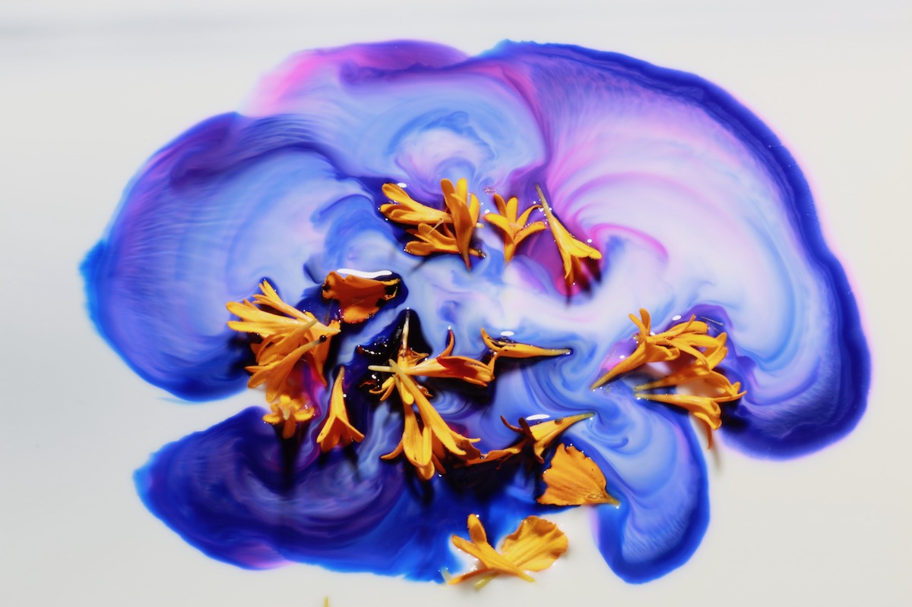
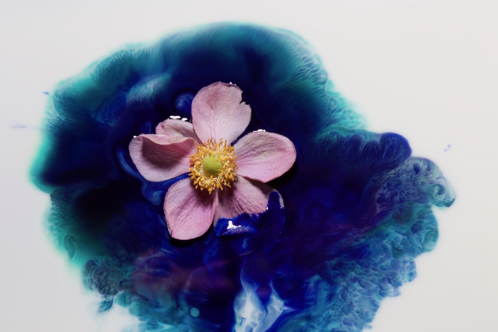
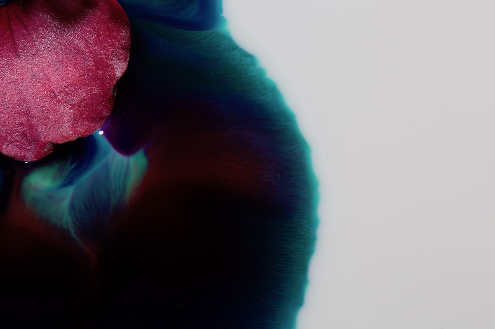
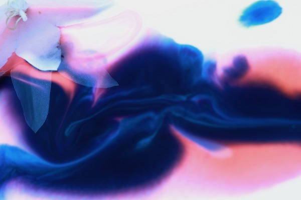
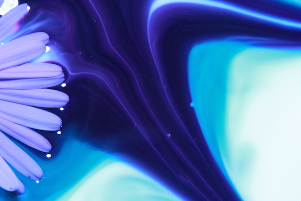
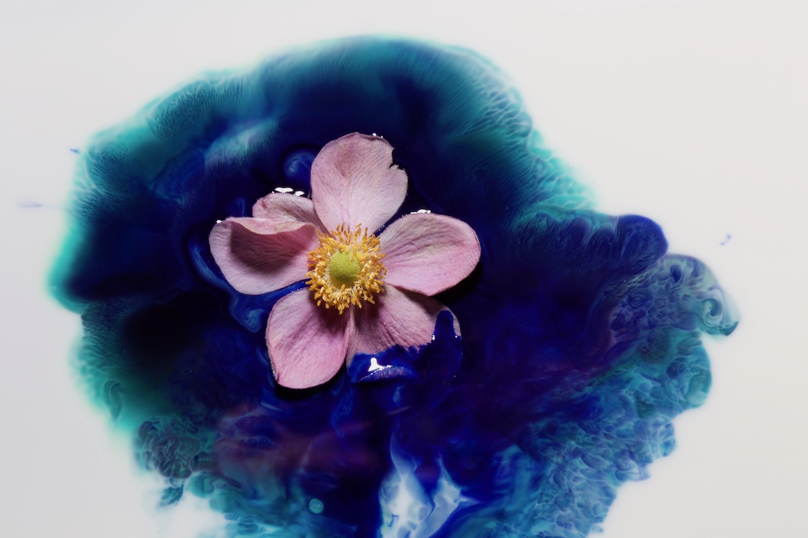
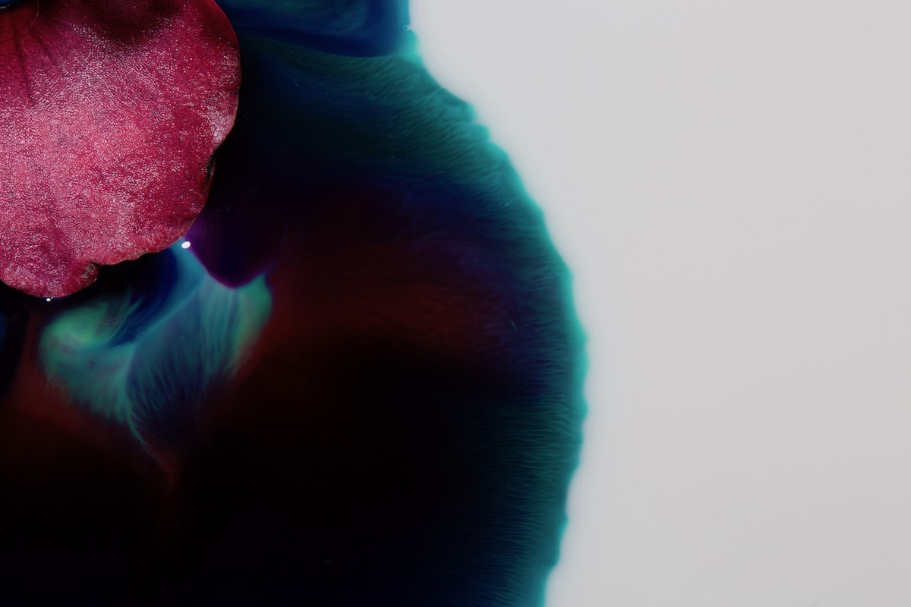
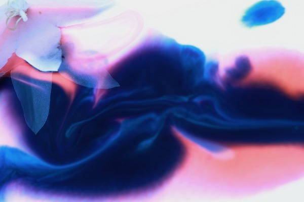
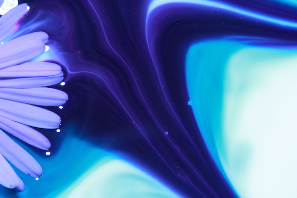
MURAPICLAF est un projet photo réalisé dans le cadre de mes cours de photographie. Ce sont des photos de nature morte centré sur le thème végétal. Ces photos ont été prisent en studio avec deux de mes camarades, sur une surface liquide où nous nous sommes amusé à créer différent univers à l'aide de fleur et d'encre.
VIDEO
"PLAN-SEQUENCE"

"ANIMATION AFTER-EFFECT"
"EOLIPILE"